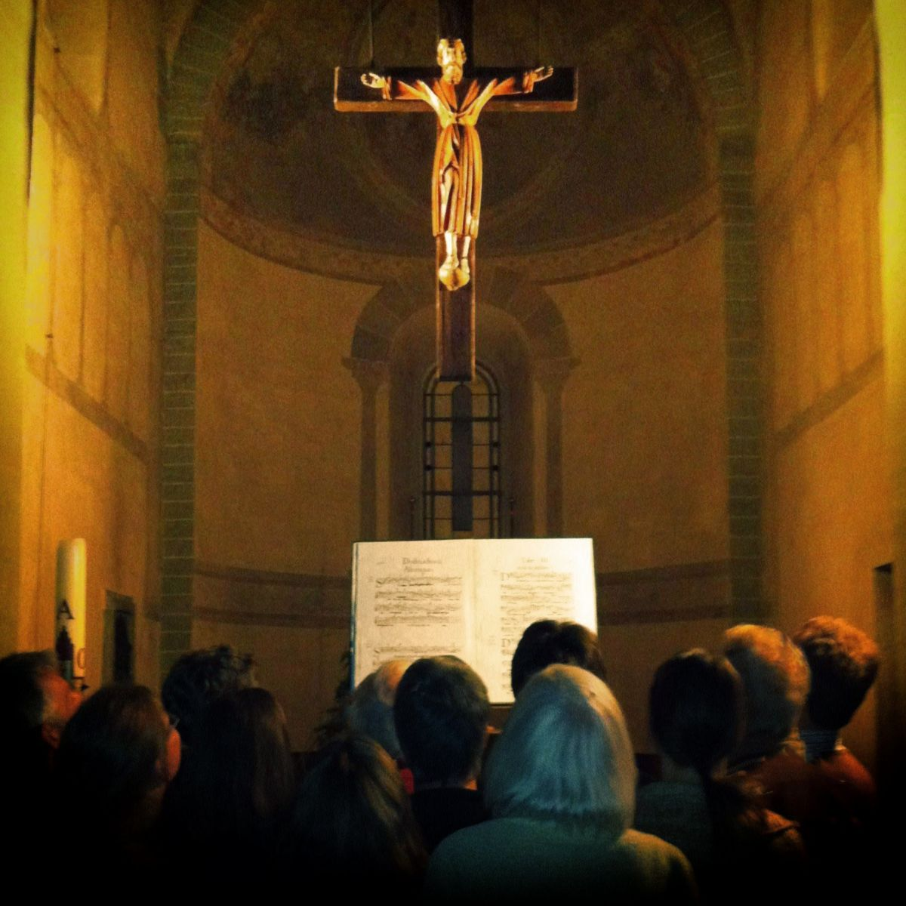

Cantus Modalis
After her pension in 2007, Rebecca Stewart founded Cantus Modalis, which has both an educational and a performing branch. The main purpose of the educational Center Cantus Modalis is to study and teach the underlying principles of the living modal traditions of the non-Western world in conjunction with the long-dead modal traditions of the Western world, this with the intention of reanimating the Western sense of identification with its modal roots. From this perspective Cantus Modalis investigates the oral/modal roots of medieval and early Renaissance music which are ‘hidden’ within the written traditions. These ‘secrets’ often mirror important aspects of the musical esthetics of these periods which reflect, for lack of a better term ‘the cosmic layering of the divine. Cantus Modalis is convinced that the message of this very strong but often misunderstood music is as relevant today as it was 500 years ago.
Ensemble Cantus Modalis
The performing branch, Ensemble Cantus Modalis, is composed primarily of singers and instrumentalists who have been educated at the Schola Cantorum Brabantiae (Fontys Conservatory in the Netherlands) and/or the Center Cantus Modalis, where they have studied medieval and Renaissance music. One of the distinguishing visual features of the Ensemble is that it always sings from facsimiles of the original manuscripts or prints, be they in choirbook or in partbook format. In both cases each voice is written separately, not, as is standard with most vocal music, in score format. The influence of the mensural notation and the overall appearance, combined with constant emersion in the modal techniques involved, exerts a definitive influence on the manner of performance. The artistic director, Dr. Stewart, excels in the making of programmes which are always tightly unified organically, thereby becoming ‘compositions’ in their own right.

Sound of the Ensemble
The sounding results of this approach are clearly audible and have been described as: ‘vivid, transparent and elastic’ (Marijke Ferguson), ‘it [Christian van der Ameijden CD] directly touches the heart’ (…), ‘sonorous and clear’ (Anthony Fiumara); ‘what a surprising and lovely [Isaac/Buchner] CD! It is a brilliant… and authentic… document… Christ ist Erstanden touched me deeply’ (Willem Elders); ‘… and with such excellent intonation!’ (Barbara Haggh). Cantus Modalis hopes that today’s audience, as their medieval ancestors, not only come under the spell of this magical music, but will also sense its underlaying values.
Artistic leader Dr. Rebecca Stewart
Cantus Modalis is led by Dr. Rebecca Stewart. She has studied musicology, ethnomusicology, and different vocal genres at universities and centers in the United States, India and The Netherlands. She obtained her doctorate in ethnomusicology at the University of California and specialized for 15 years in Hindustani classical music. The combination of these experiences has given her a deep understanding of modal traditions, be they ‘Eastern’ or ‘Western’. This forms the basis of her approach to our western traditions, extending from the earliest forms of chant through their many and varied polyphonic offshoots. Since moving to The Netherlands in 1974 she has concentrated more on early European vocal traditions. In 1978 she became founder and director of the department of baroque singing at the Royal Conservatory in The Hague. From 1987 to 2002 she was maestro di cappella of the vocal ensemble Cappella Pratensis. In 1989 she founded the department of early ensemble singing at the Fontys Conservatory in Tilburg.